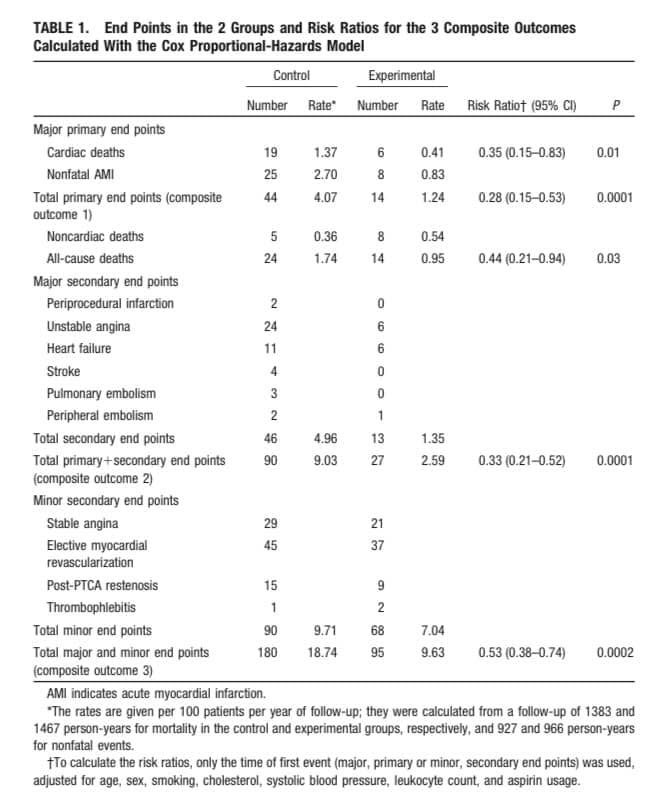

I’ve talked about this trial a hundred times before, but here is something I don’t think I’ve ever mentioned…
The LDL in the intervention group was roughly the same as the LDL in the control group.
Eating a healthy diet can massively reduce risk, even WITHOUT lowering LDL.
To a large degree, diet and LDL are independent risk factors.
—————-
The rate of heart attacks and cardiovascular-related deaths was reduced by 73 percent, and total deaths from all causes were reduced by 70 percent in the traditional Mediterranean group, as compared to the AHA diet group. All in just 2.5 years.
There is no drug in the history of cardiology that has beaten these results in a primary or secondary prevention trial. No drug or other diet for CVD has ever come anywhere close to reducing total mortality by 70% in just 2.5 years. Not even remotely close. A reduction in total mortality that large in such a short time frame is unheard of in the world of cardiology.
Diet is king in preventing heart disease and death. This trial proved it.
From 1988 to 1992, the Lyon Heart Study evaluated the effect on heart disease of a traditional Mediterranean diet. More than 600 patients who had a heart attack were randomly selected to eat either an American Heart Association diet or a traditional Mediterranean-style diet.
After only 2.5 years, the results of the Lyon Heart Study showed a large reduction in heart attacks and cardiovascular-related deaths in the group who ate the traditional Mediterranean diet versus the American Heart Association diet— as well as a large reduction in deaths from all causes.
The rate of heart attacks and cardiovascular-related deaths was reduced by 73 percent, and total deaths from all causes were reduced by 70 percent in the Mediterranean-style group, as compared to the AHA diet group.
Paper · The LancetThe Lancet articlethelancet.com
Quoted:
“After a mean follow up of 27 months, there were 16 cardiac deaths in the control and 3 in the experimental group; 17 non-fatal myocardial infarction in the control and 5 in the experimental groups: a risk ratio for these two main endpoints combined of 0·27 (95% Cl 0·12-0·59, p=0·001) after adjustment for prognostic variables. Overall mortality was 20 in the control, 8 in the experimental group, an adjusted risk ratio of 0·30 (95% Cl 0·11-0·82, p=0·02).”
The trial was successful so quickly that they decided to stop it early for ethical reasons after only 2.5 years, in order to encourage everyone on the AHA diet to switch to the traditional Mediterranean diet.
The Mediterranean-style diet used fish and poultry (in place of processed meat and red meat) as the major sources of animal protein and was very high in whole plant foods including fruits, vegetables, legumes, whole grains, nuts, and seeds.
The diet encouraged mild to moderate amounts of red wine.
Extra virgin olive oil was used liberally, and was the main source of fat in the diet. Canola oil and regular olive oil were also allowed.
Almost ALL cooked food was prepared with these oils, and they were also used on raw foods like salads.
The diet guidelines called for less red meat, butter and cream.
Instead of butter and cream, the study used a specially prepared margarine made with non-hydrogenated canola oil which contained alpha linolenic acid (an omega-3 fatty acid).
A second publication extending the followup period to 4 years is linked-to below. This extended followup occurred after the trial was officially stopped:
Paper · Circulation · 1999Mediterranean Diet, Traditional Risk Factors, and the Rate of Cardiovascular Complications After Myocardial InfarctionBackground —The Lyon Diet Heart Study is a randomized secondary prevention trial aimed at testing whether a Mediterranean-type diet may reduce the rate of recurrence after a first myocardial infarction. An intermediate analysis showed a striking protective effect after 27 months of follow-up. This report presents results of an extended follow-up (with a mean of 46 months per patient) and deals with the relationships…ahajournals.org
The two main figures in the paper are shown in the photos below. The first is survival without heart attack or cardiovascular-related death for both Mediterranean and AHA diets. The second is a table comparing the various outcomes between the two groups.
More information on the actual foods eaten in this study can be found in the paper linked-to below, including more details on how canola oil (rapeseed oil) was used in addition to olive oil:
Paper · Circulation · 2001Lyon Diet Heart Studyahajournals.org
#lyonHD #mediterraneanHD #evooHD #oliveoilHD #canolaoilHD #seedoilsHD #mediterraneanrctHD #processedmeatHD #redmeatHD

